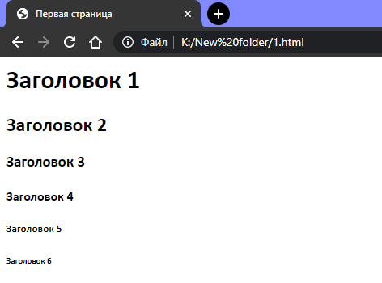
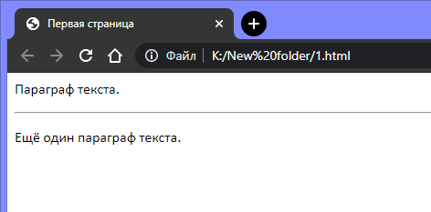

Не рекомендуется использовать теги заголовков, если требуется просто выделить текст жирным шрифтом. Поисковые системы придают заголовкам большое значение: используют их для индексации структуры страницы и её контента.
В HTML используется 6 уровней заголовков, которые организованы по уровню важности: <h1>, <h2>, <h3>, <h4>, <h5> и <h6>.
В нижеприведённом коде использованы все 6 заголовков:
Результат:

Чтобы добавить в документ горизонтальную линию, используется тег <hr>.
Результат:

Комментарии не отображаются браузером, но они помогают в составлении документа и дают возможность добавлять описания, делать заметки, напоминания и прочее.
Для примера вставим строку комментария в наш предыдущий блок кода:
Результат: